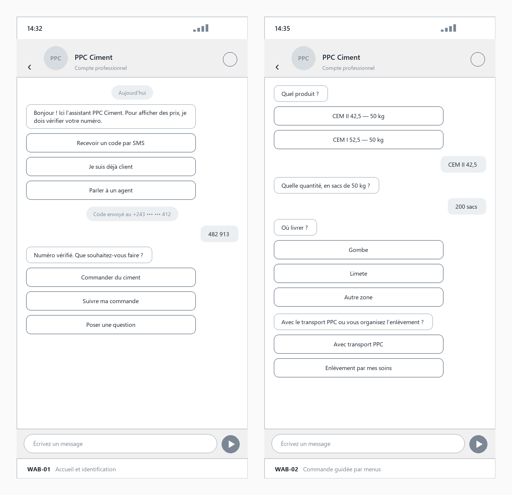
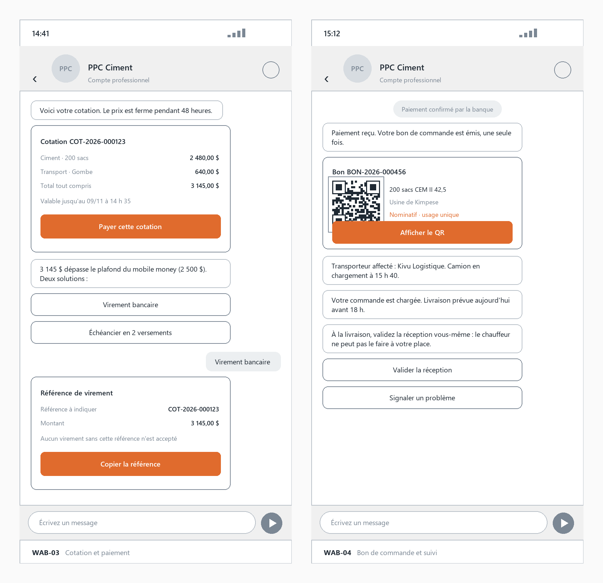

Canal WhatsApp
WhatsApp
Le client demande un prix, reçoit sa cotation, paie en la référençant — et le bon arrive dans la
conversation.
Demande de prix
Cotation émise, prix ferme
Paiement référencé à la cotation
Bon nominatif, à usage unique

